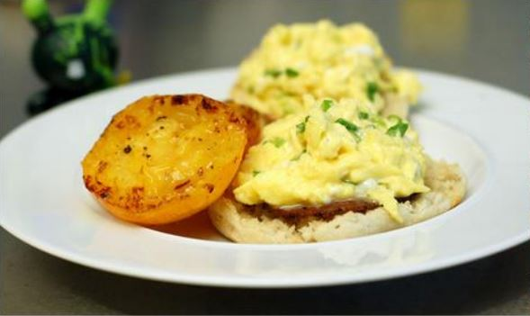

Home

A community cafe serving home cooked, locally sourced, organic food
With stunning views of the ocean, Example Cafe offers the perfect enviroment to unwind and rechanrge the batterries.
Our menu offers a wide range of breakfasts brunches and lunches, including a range of vegetarian options.
Whether you sip on a fresh, hot coffee or a cooling smoothie, you never need to feel rushed. Relax with friends or just watch the world go by.
This weekend's special brunch
This weekend, or season of special brunches continues with scramble egg on a English muffin. Not for the faint-hearted, the secret to these eggs is that they are made with half cream and cooked in butter, with no more than four eggs in the pan at a time.